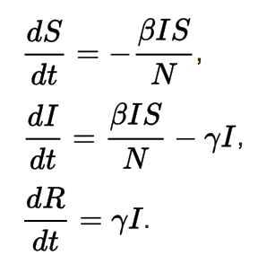
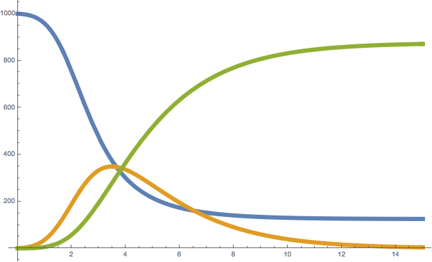
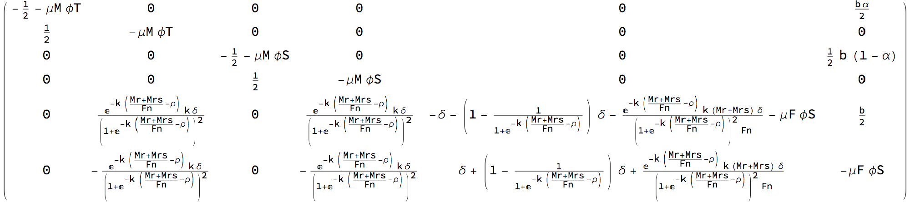
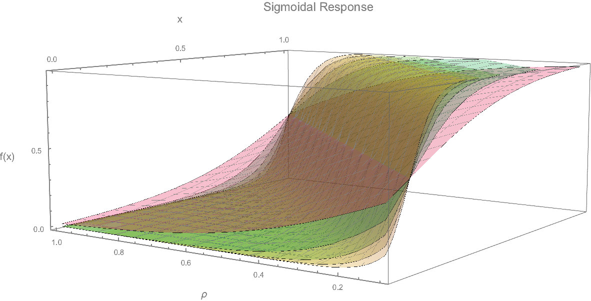
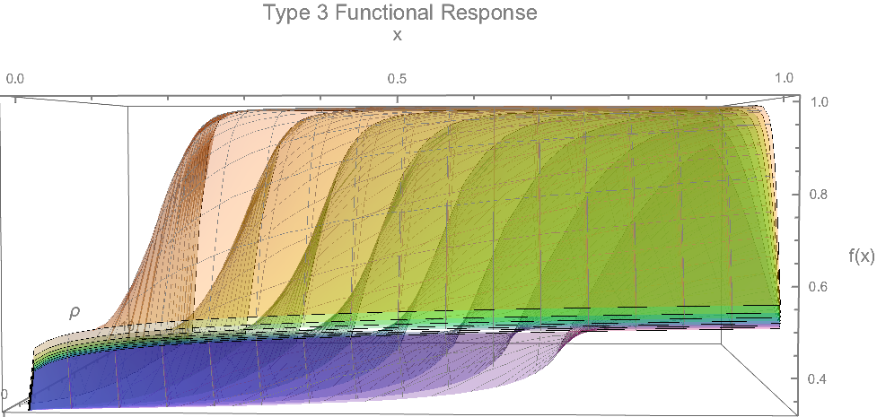
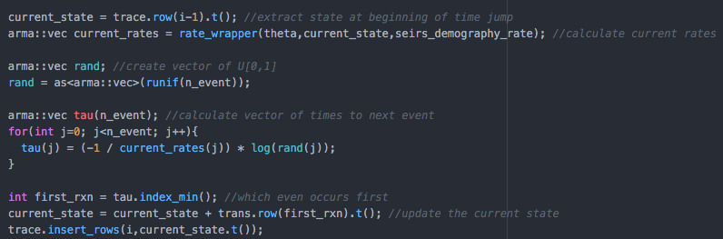

name: inverse layout: true class: center, middle, inverse --- #Mathematical, Stochastic, and Agent-based Modeling for Epidemiology Sean Wu Advisor: John Marshall, PhD --- layout: false .left-column[ ## Mathematical Models in Epidemiology ] .right-column[ What questions can models help answer? - A mathematical model is a deterministic model built from a system of equations whose behavior is governed by parameters and state variables. - Parameters: values that describe how the equations describe social or biological processes and are commonly expressed as rates (or contact, movement, transmission, etc). - State Variables: values that describe the salient features of the population we are modeling at each time point (number of susceptibles, number of children, number of infected vectors, etc). - Classic differential equation models model change in state variables as a function of time for a given set of parameters. .footnote[.red[*] But we can do better!] ] --- .left-column[ ## Mathematical Models in Epidemiology ## Differential Equation Models ] .right-column[ The most basic models are systems of ordinary or partial differential equations.  -The SIR model is a classic model in mathematical epidemiology. Despite its simplicity, we can derive many useful insights from it. -Basic reproduction number: R<sub>0</sub>: β / γ -Force of infection: F = βI -Average time to recovery: γ<sup>-1</sup> -Average time between contacts: β<sup>-1</sup> ]  --- .left-column[ ## Mathematical Models in Epidemiology ## Differential Equation Models ] .right-column[ But differential equation models can be much more complicated: - Complexity can give rise to emergent behavior. Complexity can model multiple pathogens, multiple host populations, multiple vector populations:  Often we are most interested in how models can be fit to data. By fitting models to data we can: - Test competiting hypotheses (which of all models θ<sub>i</sub> ∈ Θ provides the best fit?) - Bayesian paradigm: what does the posterior distribution of the model given the data look like? P(θ|Y) ∝ ℒ(θ;Y) × P(θ) - Fisherian (Likelihood-ist) paradigm: what can we say about our model from θ̂<sub>MLE</sub>? ] --- .left-column[ ## Mathematical Models in Epidemiology ## Differential Equation Models ] .right-column[ What do different models look like in "reality"? What are we really trying to discriminate between?   - Two different rate limiting functions for how mosquito life cycle parameters are affected by vector interventions for malaria control. - By comparing models intelligently ("best fitting" model is not always biologicall plausible!) we can derive a mechanistic model of how specific processes occur in nature. - Models force us to be deliberate in our assumptions, and may help expose flaws in our thinking! ] --- .left-column[ ## Mathematical Models in Epidemiology ## Stochastic Models ] .right-column[ Despite their usefulness, sometimes deterministic models do not provide an accurate enough depiction of reality. For this reason there are a variety of stochastic modeling methods. - Models based on Markov processes: - Gillespie algorithm: simulates a "statistically exact" trajectory of a continuous-time Markov process. This is a massive field of models that simulate discrete events rather than average rates. <!--  --> - Matrix Population Models: model populations moving through life stages as a discrete-time Markov process. - Cellular Automata: - Often used to model the dynamics of competing pathogens (such as development of drug-resistance), discrete-time (usually), and explicitly spatial. <img src="images/migrationCA.gif" height="240" width="240"> ] --- .left-column[ ## Mathematical Models in Epidemiology ## Stochastic Models ] .right-column[ Network Models encompass a vast variety of models and modeling methods. They can run in continuous or discrete time <iframe src="images/sirERGM.html" width="512px" height="512px" frameBorder="0"></iframe> ] --- template: inverse ## Fitting Models to Data Maximum Likelihood Estimation and Bayesian Inference --- .left-column[ ## Bayesian Inference ] .right-column[ Bayesian Inference ] --- .left-column[ ## Bayesian Inference ] .right-column[ Code blocks can be syntax highlighted by specifying a language from the set of [supported languages](https://github.com/gnab/remark/wiki/Configuration#highlighting). Using [GFM](http://github.github.com/github-flavored-markdown/) fenced code blocks you can easily specify highlighting language: .pull-left[ <pre><code>```javascript function add(a, b) return a + b end ```</code></pre> ] .pull-right[ <pre><code>```ruby def add(a, b) a + b end ```</code></pre> ] A number of highlighting [styles](https://github.com/gnab/remark/wiki/Configuration#highlighting) are available, including several well-known themes from different editors and IDEs. ] --- name: last-page template: inverse ## That's all folks (for now)! Slideshow created using [remark](http://github.com/gnab/remark).